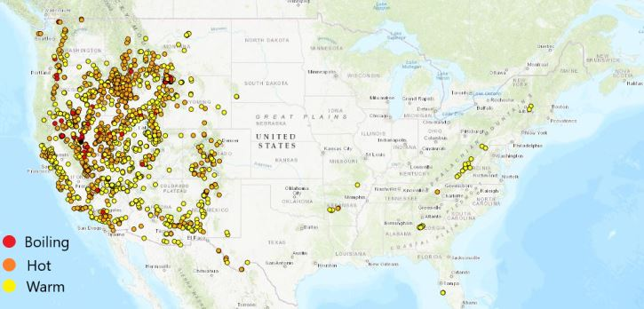

7 Natural Hot springs in and around Virginia

Hot springs are becoming more and more popular as the years go by. Virginia and the surrounding areas have some of the best hot springs to offer along with many different amenities close by. Whenever you need time to just sit and relax while having your skin revitalized, a hot spring will always be your best bet. Hot springs are also called by other names such as warm springs or thermal springs so whichever name you hear, just know that they are considered to all be the same.
There are over 100 natural hot springs in virginia and these hot springs will cater to people of all different types of temperature tolerances. Some of these hot springs in Virginia are warm to the touch, while others tend to be at or around the 100° mark.
Here is a map of the available hot springs around the United StatesHot springs labeled with a red dot are all boiling level hot springs, orange labels are hot springs, and yellow labels are of warm hot springs.

Jefferson Pools
The Omni Homestead Resort
Spa Garden
Octagon Springs
Reflexology Walk
- Clear Sinuses
- Boost Fertility
- Help Back Problems
- Improve Digestion
- Heal bacterial infections
- Correct hormonal imbalances
- Help fight cancer
Berkeley Springs State Park
- Camping
- Golf
- Swimming
- Museum and historical sites
- RIDGE FISH HATCHERY
- CACAPON RESORT STATE PARK
- Horseback Riding
- Golfing
- Watersports
- Hiking
Capon Springs & Farms
Golf
Fishing
Hot Springs, NC
- TREE TOP ZIP-LINE TOURS
- WHITEWATER RAFTING
- HORSEBACK RIDING
- HIKING
Healing Springs South Carolina
- Historic features
- Picnic tables
- Walking paths
- Wetland
- Drinking water
- Springs
- Creeks
Olympic Hot Springs
EQUICK Slippers for Women and Men
Hammam Linen Cool Grey Bath Towels
11 Bath St, Warm Springs, VA 24484

Notice
The Jefferson Pools is currently closed and will be closed until further notice from the Bath County officials. However, i decided to place this hot spring pools at the number one spot in hopes of it getting more attention in order for it to be re-opened.
Visitors from all over the world come to the Jefferson Pools to enjoy its mineral-rich waters. It is said that Europeans and explorers in the 1700s discovered these pools and later built small guest lodges close to the pool. They, like everyone else, used the mineral-rich waters to soothe aches and pains or just to simply soothe tired bodies.
Thomas Jefferson, which is the third president of the United States of America first visited the Jefferson Pools in the year 1818 and stayed 3 weeks taking in the pool's water each day. The Jefferson Pools was known as the Warm Springs Bathhouses before later being renamed after Thomas Jefferson in 1996. There is a high mineral content and the water is crystal clear all around.
7696 Sam Snead Hwy, Hot Springs, VA 24445

The Omni Homestead Resort was built in 1766, sits on 200 acres of land, and has hosted 23 United States presidents over the years. The resort comprises many different types of attractions and we will be going over each of them below.
The Spa Garden's mineral water was discovered over a century ago and has since brought peace of mind and healing benefits to people from all different walks of life. The Spa Garden is of European design and will definitely appeal to anyone who visits. Visitors have the option of cooling off in the shade of the provided cabana, take a sunbath in one of the pools that is spring-fed.
The Octagon Springs was first enclosed sometime in the 19th century. There are several springs that form the pool which is in the shape of an octagon and this pool sit at or around 99.7°.
The Omni Homestead Resort offers a reflexology walk which is the art of applying pressure to certain parts of the body. Applying pressure to these parts of the body is said to promote a healthy immune system.
Some people that have opted in for the Reflexology walk have reported many
2 S Washington St, Berkeley Springs, WV 25411

The Berkeley Springs is located in the center of the Berkeley Springs State Park and is a mineral spa that always has warm spring water. This spring water is always at a moderate temperature of around 74.3°. Being on the Berkeley Springs State Park premises offers other amenities such as the Main Bathhouses and Old Roman Bathhouses. These bathhouses offer services such as saunas, massages, showers, and baths.
Activities available
Attractions Nearby
You will have many different options to enjoy yourself while you visit the Berkeley Springs. Here are a couple attractions you can visit while you are here.
The Ridge Fish Hatchery is located only a couple miles south of Cacapon Resort State Park. Admission here is free and this is where most trout and bass are raised before being released into the local lakes and streams.
This resort is located roughly 10 miles south of Berkeley Springs. You are able to stay here overnight as well as enjoy many recreational activities.
These activities include:3818 Capon Springs Rd, High View, WV 26808

The Capon Springs & Spa is an all-inclusive resort that has mineral water in its spas. You can soak in the pools that were built to resemble old school roman architecture. Whenever you are not soaking in the pools, you can opt-in for reflexology sessions, facials, or some soothing massages.
Making a trip here, you will have the great feeling of having a spa that is filled with minerals, along with many other activities and amenities to enjoy. Some of these amenities include:
There are 2 nine hole courses here to enjoy which are the short par three and a regulation. There are no water hazards, great lawn care, and tree-lined fairways.
There are a total of 2 fishing ponds that has many different species of fish like bass, giant carp, trout, catfish, and blue-gill. You are not required to have a fishing license and will be allowed to have your catch cooked by one of the Capon cooks once the catch is over 8 inches.
315 Bridge Street P.O. Box 428 Hot Springs, NC 28743

Native Americans were the first to discover the soothing mineral waters in this area. Scientists have found many different evidence that these Native Americans have been here over 5000 years ago.
The mineral water here is warm and suitable for everyone. This is one place you need to experience to appreciate it.
What are some recreational activities available?
There are many recreational activities you can take part in while at hot springs, nc. Here are some.

While you visit the Hot Springs, you can enjoy the tree top zip-line tours. This is a fun activity that will get the heart pumping. You will see the top of many beautiful trees as well as many different plants. Take the whole family here and enjoy.

Enjoy your time rafting with friends or family. This is a fun activity for anyone who loves being on the water.

Why not enjoy horseback riding while you are in the area? It does not matter who you are or which disability you might have, this horseback riding trail caters to everyone. Kids, families, and disabled visitors.

If you are an avid hiker you will surely enjoy the trails offered in and around this location. There are popular trails such as the Laurel River Trail, Pump Gap Loop Trail, Appalachian Trail Town, Lover's Leap Trail and the Appalachian Trail Loop.
Blackville, Barnwell County, SC.

The mineral water here contains minerals such as calcium, barium, manganese, silicon, sodium, magnesium, titanium, zinc, and nitrium. Some people say they have tasted the water here and it was some of the best tasting water they ever had. Some residents say that the water here is the only water they ever drink and will ever drink.
Stories state that when there was the American Revolution, there were 6 British Soldiers that were left by the springs in order to die. However, after 6 months, these same 6 soldiers returned to their post claiming that they were healed by the Healing Springs water.
Features available
Water Features

The Klallam Tribe has used the Olympic Hot Springs for centuries for something they call vision quests. In 1892, Andrew Jacobson was the first European to visit the springs albeit with the help of a Klallam friend.
This hot spring is a favorite among many because of the privacy soakers have most of the year. This privacy is given because of the low occupancy this spring gets due to the 2.5-mile hike to get there. The water temperature here stays at or around 138°. You will not have to just enjoy the spring by itself, there are river canyons, waterfalls, and forest scenery to enjoy as well. There are a total of seven pools and you will most likely have the option of choosing whichever one you want to soak in.
Subscribe
Stay updated with our newsletter
Hot Spring Items
Here are some items to make your time at any hot spring more enjoyable. My favorite is the EQUICK non-slip sandals.

These sandals are perfect for a hot spring visit. You don't want to get of a hot spring and have any accidents such as slipping. These non-slip sandals will help with keeping you and your family on your feet.

After soaking in a hot springs, you will most likely want a towel that is absorbent and soft on the skin. This 4 pack towel set will get you and three other family members dry in no time. Pick up a set today.
Conclusion
As stated earlier, hot springs are a great way to relax and also a good source of a mineral bath. Hot springs are used by people of all ages to help with certain types of health conditions. Skin infections and irritations such as eczema and rashes are known to get better or feel better after taking a bath in a sulfur-rich hot spring. Sulfur has many healing capabilities and is known by many around the world to be a good source of help for people with arthritis, dry scalp, and also many other internal disorders such as digestive disorders and menopausal problems. Try a virginia hot spring to see how good you feel after taking a dip.